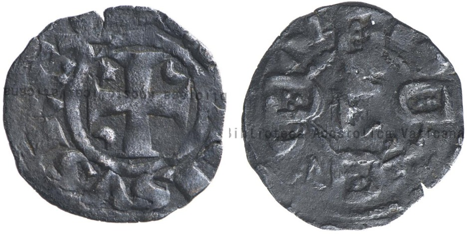

A Biblioteca do Vaticano tem colecção de moedas online: Visitar opac.vatlib.it Infelizmente, no entanto, o único exemplar de uma moeda portuguesa inventariado é um vulgar dinheiro de D. Afonso III. É caso para perguntar: Não existirão por lá outras coisas mais interessantes?